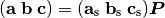
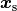
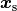
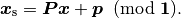
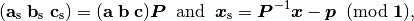

API¶
spg_get_major_version, spg_get_minor_version, spg_get_micro_version¶
New in version 1.8.3
Version number of spglib is obtained. These three functions return integers that correspond to spglib version [major].[minor].[micro].
spg_get_symmetry¶
This function finds a set of representative symmetry operations for primitive cells or its extension with lattice translations for supercells.
int spg_get_symmetry(int rotation[][3][3],
double translation[][3],
const int max_size,
const double lattice[3][3],
const double position[][3],
const int types[],
const int num_atom,
const double symprec);
The operations are stored in rotation and translation. The
number of operations is return as the return value. Rotations and
translations are given in fractional coordinates, and rotation[i]
and translation[i] with same index give a symmetry operations,
i.e., these have to be used together.
As an exceptional case, if a supercell has the basis vectors of the
lattice that break crsytallographic point group, the crystallographic
symmetry operations are searched with this broken symmetry, i.e., at
most the crystallographic point group found in this case is the point
group of the lattice. For example, this happens for the  supercell of a conventional cubic unit cell. This may not
be understandable in crystallographic sense, but is practically useful
treatment for research in computational materials science.
supercell of a conventional cubic unit cell. This may not
be understandable in crystallographic sense, but is practically useful
treatment for research in computational materials science.
spg_get_international¶
Space group type is found and returned in international table symbol
to symbol and also as a number (return value). 0 is returned when
it fails.
int spg_get_international(char symbol[11],
const double lattice[3][3],
const double position[][3],
const int types[],
const int num_atom,
const double symprec);
spg_get_schoenflies¶
Space group type is found and returned in schoenflies to symbol
and also as a number (return value). 0 is returned when it fails.
int spg_get_schoenflies(char symbol[10],
const double lattice[3][3],
const double position[][3],
const int types[],
const int num_atom,
const double symprec);
spg_standardize_cell¶
The standardized unit cell (see Conventions of standardized unit cell) is
generated from an input unit cell structure and its space group type
determined about a symmetry search tolerance. Usually
to_primitive=0 and no_idealize=0 are recommended to set and
this setting results in the same behavior as spg_refine_cell.
int spg_standardize_cell(double lattice[3][3],
double position[][3],
int types[],
const int num_atom,
const int to_primitive,
const int no_idealize,
const double symprec);
Number of atoms in the found standardized unit (primitive) cell is returned.
to_primitive=1 is used to create the standardized primitive cell
with the transformation matricies shown at
Transformation to the primitive cell, otherwise to_primitive=0
must be specified. The found basis vectors and
atomic point coordinates and types are overwritten in lattice,
position, and types, respectively. Therefore with
to_primitive=0, at a maximum four times larger array size for
position and types than the those size of the input unit cell
is required to store a standardized unit cell with face centring found
in the case that the input unit cell is a primitive cell.
no_idealize=1 disables to idealize lengths and angles of basis
vectors and positions of atoms according to crystal symmetry. The
detail of the idealization (no_idealize=0) is written at
Idealization of unit cell structure. no_idealize=1 may be used when we want to
leave basis vectors and atomic positions in Cartesianl coordinates
fixed.
spg_find_primitive¶
Behavior is changed. This function is now a shortcut of
spg_standardize_cell with
to_primitive=1 and no_idealize=0.
A primitive cell is found from an input unit cell.
int spg_find_primitive(double lattice[3][3],
double position[][3],
int types[],
const int num_atom,
const double symprec);
lattice, position, and types are overwritten. Number of
atoms in the found primitive cell is returned.
spg_refine_cell¶
This function exists for backward compatibility since it is same as spg_standardize_cell with to_primitive=0 and leave_distorted=0.
The standardized crystal structure is obtained from a non-standard crystal structure which may be slightly distorted within a symmetry recognition tolerance, or whose primitive vectors are differently chosen, etc.
int spg_refine_cell(double lattice[3][3],
double position[][3],
int types[],
const int num_atom,
const double symprec);
The calculated standardized lattice and atomic positions overwrites
lattice, position, and types. The number of atoms in the
standardized unit cell is returned as the return value. When the input
unit cell is a primitive cell and is the face centring symmetry, the
number of the atoms returned becomes four times large. Since this
function does not have any means of checking the array size (memory
space) of these variables, the array size (memory space) for
position and types should be prepared four times more than
those required for the input unit cell in general.
spg_get_dataset and spg_get_dataset_with_hall_number¶
Changed in version 1.8.1
For an input unit cell structure, symmetry operations of the crystal
are searched. Then they are compared with the crsytallographic
database and the space group type is determined. The result is
returned as the SpglibDataset structure as a dataset. The default
choice of setting of basis vectors in spglib is explained in the
manuscript found at http://arxiv.org/abs/1506.01455.
Usage¶
Dataset corresponding to the space group type in the standard setting
is obtained by spg_get_dataset. If this symmetry search fails,
NULL is returned in version 1.8.1 or later (spacegroup_number = 0
is returned in the previous versions). In this function, the other
crystallographic setting is not obtained.
SpglibDataset * spg_get_dataset(const double lattice[3][3],
const double position[][3],
const int types[],
const int num_atom,
const double symprec);
To specify the other crystallographic setting (origin, axis, or cell
choice), spg_get_dataset_with_hall_number is used.
SpglibDataset * spg_get_dataset_with_hall_number(SPGCONST double lattice[3][3],
SPGCONST double position[][3],
const int types[],
const int num_atom,
const int hall_number,
const double symprec)
where hall_number is used to specify the setting. The possible
choices and those serial numbers are found at list of space groups
(Seto’s web site).
The crystal structure has to possess the space-group type of the Hall
symbol. If the symmetry search fails or the specified hall_number
is not in the list of Hall symbols for the space group type of the
crystal structure, spacegroup_number in the SpglibDataset
structure is set 0.
Finally, its allocated memory space must be freed by calling spg_free_dataset.
Dataset¶
The dataset is accessible through the C-structure given by
typedef struct {
int spacegroup_number;
int hall_number;
char international_symbol[11];
char hall_symbol[17];
char setting[6];
double transformation_matrix[3][3];
double origin_shift[3];
int n_operations;
int (*rotations)[3][3];
double (*translations)[3];
int n_atoms;
int *wyckoffs;
int *equivalent_atoms;
int n_std_atoms; /* n_brv_atoms before version 1.8.1 */
double std_lattice[3][3]; /* brv_lattice before version 1.8.1 */
int *std_types; /* brv_types before version 1.8.1 */
double (*std_positions)[3]; /* brv_positions before version 1.8.1 */
int pointgroup_number;
char pointgroup_symbol[6];
} SpglibDataset;
In versions before 1.8.1, the member names of n_std_atoms,
std_lattice, std_types, and std_positions were
n_brv_atoms, brv_lattice, brv_types, and
brv_positions, respectively.
Space group type¶
spacegroup_number is the space group type number defined in
International Tables for Crystallography (ITA). hall_number is the
serial number between 1 and 530 which are found at list of space
groups (Seto’s web site).
The (full) Hermann–Mauguin notation of space group type is given by
international_symbol. The Hall symbol is stored in
hall_symbol. The information on unique axis,
setting or cell choices is found in setting.
Symmetry operations¶
The symmetry operations of the input unit cell are stored in
rotations and translations. A crystallographic symmetry
operation  is made from a pair
of rotation
is made from a pair
of rotation  and translation
and translation
 parts with the same index. Number of symmetry
operations is given as
parts with the same index. Number of symmetry
operations is given as n_operations. The detailed explanation of
the values is found at spg_get_symmetry.
Site symmetry¶
n_atoms is the number of atoms of the input unit
cell. wyckoffs gives Wyckoff letters that are assigned to atomic
positions of the input unit cell. The numbers of 0, 1, 2,
, correspond to the a, b, c, ,
respectively. Number of elements in wyckoffs is same as
n_atoms. equivalent_atoms is a list of atomic indices that map
to indices of symmetrically independent atoms, where the list index
corresponds to atomic index of the input crystal structure.
Origin shift and lattice transformation¶
Changed in version 1.8.1
transformation_matrix and origin_shift are obtained as a
result of space-group-type matching under a set of unique axis,
setting and cell choices. In this matching, basis vectors and atomic
point coordinates have to be standardized to compare with the database
of symmetry operations. The basis vectors are transformed to those of
a standardized unit cell. Atomic point coordinates are shifted so that
symmetry operations have the standard
origin. transformation_matrix ( ) is the
matrix to transform the input basis vectors to the standardized basis
vectors, wihch is represented as
) is the
matrix to transform the input basis vectors to the standardized basis
vectors, wihch is represented as

where  ,
,  , and
, and  are the input (original) basis vectors, and
are the input (original) basis vectors, and
 ,
,  , and
, and
 are the standardized basis vectors. The
are the standardized basis vectors. The
origin_shift ( ) is the vector from the
origin of the standardized coordinate system to the origin of the
input (original) coordinate system measured in the standardized
coordinate system. The atomic point shift is measured from the
standardized unit cell (conventional unit cell) to the original unit
cell measured in the coordinates of the standardized unit cell. An
atomic point in the original unit cell
) is the vector from the
origin of the standardized coordinate system to the origin of the
input (original) coordinate system measured in the standardized
coordinate system. The atomic point shift is measured from the
standardized unit cell (conventional unit cell) to the original unit
cell measured in the coordinates of the standardized unit cell. An
atomic point in the original unit cell  (input
data) is mapped to that in the standardized unit cell
 by
(input
data) is mapped to that in the standardized unit cell
 by

In versions 1.7.x and 1.8 or before, transformation_matrix and
origin_shift are defined as follows:

respectively.
Standardized crystal structure¶
Changed in version 1.8.1
The standardized crystal structure corresponding to a Hall symbol is
stored in n_std_atoms, std_lattice, std_types, and
std_positions.
In versions 1.7.x and 1.8 or before, the variable names of the
members corresponding to those above are n_brv_atoms,
brv_lattice, brv_types, and brv_positions, respectively.
Crystallographic point group¶
New in version 1.8.1
pointgroup_number is the serial number of the crystallographic
point group, which refers list of space
groups (Seto’s web site).
pointgroup_symbol is the symbol of the crystallographic point
group in the Hermann–Mauguin notation.
spg_free_dataset¶
Allocated memoery space of the C-structure of SpglibDataset is
freed by calling spg_free_dataset.
void spg_free_dataset(SpglibDataset *dataset);
spg_get_spacegroup_type¶
This function allows to directly access to the space-group-type
database in spglib (spg_database.c). To specify the space group type
with a specific setting, hall_number is used. The definition of
hall_number is found at
Space group type.
SpglibSpacegroupType spg_get_spacegroup_type(const int hall_number)
SpglibSpacegroupType structure is as follows:
typedef struct {
int number;
char schoenflies[7];
char hall_symbol[17];
char international[32];
char international_full[20];
char international_short[11];
} SpglibSpacegroupType;
spg_get_symmetry_from_database¶
This function allows to directly access to the space group operations
in the spglib database (spg_database.c). To specify the space group
type with a specific setting, hall_number is used. The definition
of hall_number is found at
Space group type.
int spg_get_symmetry_from_database(int rotations[192][3][3],
double translations[192][3],
const int hall_number);
The returned value is the number of space group operations. The space
group operations are stored in rotations and translations.
spg_get_multiplicity¶
This function returns exact number of symmetry operations.
int spg_get_multiplicity(const double lattice[3][3],
const double position[][3],
const int types[],
const int num_atom,
const double symprec);
This function may be used in advance to allocate memoery space for symmetry operations.
spg_get_symmetry_with_collinear_spin¶
This function finds symmetry operations with collinear spins on
atoms. Except for the argument of const double spins[], the usage
is same as spg_get_symmetry.
int spg_get_symmetry_with_collinear_spin(int rotation[][3][3],
double translation[][3],
const int max_size,
SPGCONST double lattice[3][3],
SPGCONST double position[][3],
const int types[],
const double spins[],
const int num_atom,
const double symprec);
spg_get_ir_reciprocal_mesh¶
Irreducible reciprocal grid points are searched from uniform mesh grid
points specified by mesh and is_shift.
int spg_get_ir_reciprocal_mesh(int grid_address[][3],
int map[],
const int mesh[3],
const int is_shift[3],
const int is_time_reversal,
const double lattice[3][3],
const double position[][3],
const int types[],
const int num_atom,
const double symprec)
mesh stores three integers. Reciprocal primitive vectors are
divided by the number stored in mesh with (0,0,0) point
centering. The center of grid mesh is shifted +1/2 of a grid spacing
along corresponding reciprocal axis by setting 1 to a is_shift
element. No grid mesh shift is made if 0 is set for is_shift.
The reducible uniform grid points are returned in fractional coordinates
as grid_address. A map between reducible and irreducible points are
returned as map as in the indices of grid_address. The number of
the irreducible k-points are returned as the return value. The time
reversal symmetry is imposed by setting is_time_reversal 1.
Grid points are stored in the order that runs left most element first, e.g. (4x4x4 mesh).:
[[ 0 0 0]
[ 1 0 0]
[ 2 0 0]
[-1 0 0]
[ 0 1 0]
[ 1 1 0]
[ 2 1 0]
[-1 1 0]
.... ]
where the first index runs first. k-qpoints are calculated by
(grid_address + is_shift / 2) / mesh. A grid point index is
recovered from grid_address by numpy.dot(grid_address % mesh,
[1, mesh[0], mesh[0] * mesh[1]]) in Python-numpy notation, where
% always returns non-negative integers. The order of
grid_address can be changed so that the last index runs first by
setting the macro GRID_ORDER_XYZ in kpoint.c. In this case the
grid point index is recovered by numpy.dot(grid_address % mesh,
[mesh[2] * mesh[1], mesh[2], 1]).
spg_get_stabilized_reciprocal_mesh¶
The irreducible k-points are searched from unique k-point mesh grids from direct (real space) basis vectors and a set of rotation parts of symmetry operations in direct space with one or multiple stabilizers.
int spg_get_stabilized_reciprocal_mesh(int grid_address[][3],
int map[],
const int mesh[3],
const int is_shift[3],
const int is_time_reversal,
const int num_rot,
const int rotations[][3][3],
const int num_q,
const double qpoints[][3])
The stabilizers are written in fractional coordinates. Number of the
stabilizers are given by num_q. Symmetrically equivalent k-points
(stars) in fractional coordinates are stored in map as indices of
grid_address. The number of reduced k-points with the stabilizers
are returned as the return value.
This function can be used to obtain all mesh grid points by setting
num_rot = 1, rotations = {{1, 0, 0}, {0, 1, 0}, {0, 0, 1}},
num_q = 1, and qpoints = {0, 0, 0}.